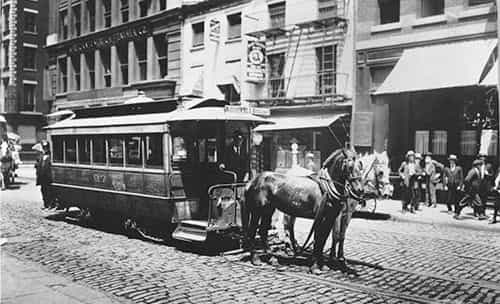
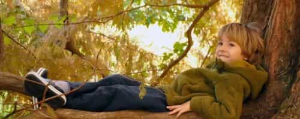
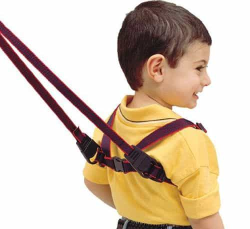
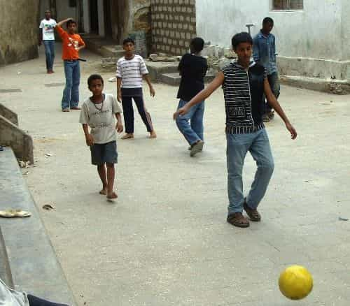
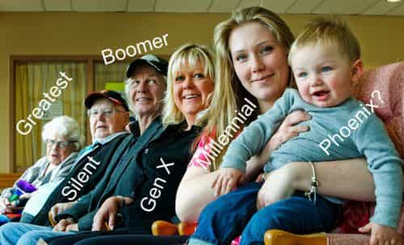

< < < Back
Children Car Seats Are A Symptom Of Our Pussified Society – Return Of Kings
The car seat is a metaphor for America’s treatment of its children. The parents have to take their child somewhere, invariably a place that they, not the kid, have chosen. They stuff him into the car. Even being in the car means that he is totally under the control of the adults; he has no influence and makes no difference. But – they strap him in. Wrap him and so he can’t wiggle around like a normal kid. The idea is to keep his body at an attitude where he will be perfectly safe in the unlikely event of an accident. So, if an accident happens once in every million outings, the kid spends the other 999,999 in a straitjacket, being driven someplace he doesn’t want to go by people who are fighting traffic and swearing and speeding a bit in order to get them there.
This is not a recipe for raising a healthy child. And car seats are only the beginning.
There are child guards at the head of the stairs, to keep the little ones out of parts of the house where they don’t belong. There are child locks on kitchen cabinets. Kids are subject to child harnesses — leashed like dogs to keep them from getting hurt. There’s a message in all this. Kids are irresponsible and that life is fraught with dangers from which they must be protected. Of course there is some truth to this. But we overdo it.
How has humanity survived until now?

My grandmother and her sister rode by themselves to downtown Manhattan
It’s the same once children get outside. If and when a kid gets to walk on the street, he must invariably be accompanied by an adult. Poor neighborhoods are the exception. The kids just play on the street and they don’t seem to get into a whole lot of trouble. In Nicaragua, all the kids play together. There is not much traffic and everybody knows each other. They don’t worry about child molesters. The kids generally grow up to be healthy, sane and productive – Nicaraguans. You may not want your kid to be to become a Nicaraguan, but you have to respect that they are psychologically normal.
America has seen the recent advent of a notion called Free Range Parenting, the idea of letting kids do things independently. Schools, government and society are working vigorously to squelch it. A Maryland family got arrested for letting two kids, 6 and 10, walk home from a park by themselves. The authorities insist on exercising authority! How things have changed. One of my grandmothers told me how in the 1890s she and my great aunt rode the horse-drawn tramway to Wall Street from their house in midtown Manhattan. The coachmen all knew the sisters – and nothing went wrong. My St. Louis grandmother would cross the Mississippi River on a train trestle, hanging on below the tracks whenever a train came by.
My father lived in a tent with his with his parents as my grandfather worked on the section of the Los Angeles aqueduct passing through the Tehachapi Mountains. He would sit on a dry hillside babysat by his dog. In my own youth, I started walking six blocks to kindergarten, across one busy street, when I was four. At seven years we kids had the run of the hills behind our house after school. Our parents never knew where we were. There were dangers – abandoned wells, quarries, and lumber stacks that might collapse. Joan Didion does a great job of describing a California childhood. Somehow we had sense enough not to get hurt.
Cossetted and cocooned

Where a kid belongs on a summer day
For my own millennial children it was a different story. Our family lived near a lovely stretch of the Potomac River full of turtles, frogs, snakes and fish that any child should have been keen to investigate and pester. However, dynamite could not get them out of their air-conditioned cocoon. The kids absolutely were not interested. Like all kids in the neighborhood, they were bound to the television.
America’s amusements have become financialized in the name of reducing risk. My kids learned to swim under close supervision in the neighborhood pool. Lady Bird Johnson had made cleaning up the Potomac River one of her projects as First Lady. She succeeded – north of Washington it is a beautiful, clean, free-flowing stream. But swimming remains forbidden. My government-socialized kids never followed their outlaw father into the water, despite assurances that it was clean and cool as well as lovely.
A misplaced sense of danger

How much would they have to pay you to smile for an advertisement like this?
Kids of eight in Kyiv take public buses to school. They are not whatsoever afraid of strangers. They are delighted to take advantage of a short bus ride to practice their English with my five year old son and me. Taking the bus might be more dangerous than being ferried in a car seat — one can’t tell — but it is a pleasure to witness the feeling of empowerment and mastery they develop being in charge of their own lives.
In La France Orange Mecanique Philippe Obertone offers another example of a misplaced sense of danger. Highway deaths fall every year in both the United States and Europe. Nevertheless, police expend ever greater amounts of money and restrict civil liberties through harsh enforcement measures in order to protect this statistic. Meanwhile, violent crime in France’s Muslim no go zones is skyrocketing. It is much easier to terrorize the middle class than rowdy immigrants who don’t respect the namby-pamby police and don’t want to be suppressed. That’s what we do with our children. We measure the fact that car seats make them safer, but can’t count the cost of their failing to develop.
Sex education
Is government sex education causing the falling birth rate among white children? It would follow the general rule that if you want an enterprise to fail, give it to the government. There is no surer way to take the fun out of sex, and keep it from accomplishing its intended objective, than to put the government in charge of teaching it.
Back in the bad old days we learned about these things quite naturally. Our household pets were not spayed. We watched them go about making puppies and kittens, which we would see being born on towels spread out in the kitchen. Our own sex education was handled in a process as old as mankind, starting with excited, exaggerated and erroneous descriptions by the older children. With a bit of well-directed input from our parents, everybody eventually figured it out. We had free time and free spaces to play doctor, which gave us a pretty good idea of the geography of the opposite sex. Enticing the girls to play the game also gave us some notion of female sensibilities and appetite for risk.
Gardeners and carpenters

Free-range children: How to become a healthy Nicaraguan
The Gardener and the Carpenter is the wonderfully metaphorical title of a book by Alison Gopnik. Her premise is that a parent cannot shape a child the same way a carpenter shapes a chair. The process cannot be totally controlled. Instead, more like a gardener, the parent has to provide a nurturing environment, give support when necessary, and pray that it comes out well. A gardener must accept risk: unexpected frost, uninvited slugs and deer that jump the garden fence. In a sense, the vegetables will grow as they will, some doing spectacularly and others failing for no obvious reason. We have to give our kids the freedom to grow, which includes the freedom to make mistakes and sometimes suffered damage. When we don’t do it — and America is headed this direction — we raise a crop of hothouse flowers without the resources or vigor to survive on their own. This degradation of our vitality is a process that simply cannot go on forever.
Name that generation

Can our kids rise to become once again the Greatest?
I hope I am not too darkly prophetic in choosing a name other than Generation Z for my young son’s peers. The labels are generally: Greatest Generation (through 1924), Silent Generation (through 1945), Boomers (through 1964), Gen X (1982), Gen Y or Millennials (2004). We see the beginning of the end of the postwar liberal idyll, as the middle class is increasingly stultified, hungry, and unemployed. Nationalist, populist movements are coming to the fore on both sides of the Atlantic. There is a sense of foreboding, ominous minor-key music playing in our background as we wait for the coming economic collapse. Therefore I would name the generation to which my five-year-old belongs generation Phoenix, because they will surely have to rise from the ashes of the collapse of system that smothered humanity with restraints in exchange for a false promise of security.
Conclusion
Throwing off the shackles of car seats may be too much to ask. They are required by law. The premise to examine is whether the kids have to be driven at all. Can’t they get to school by foot, or at least school bus? Why are you sending them to public schools instead of homeschooling them? Do they have to be freighted every day to some lesson or another—tae kwon do, swimming, piano, dance – for which they may express no particular enthusiasm? In the final analysis, can’t you simply let kids be kids the way their great grandparents were? It was not called the Greatest Generation for nothing, and they did not earn that title without taking risks. Let your kids live a little! Maybe they will grow up to be real adults.
Read More: Gaia Democratic School Takes Children On Field Trip To Porn Shop